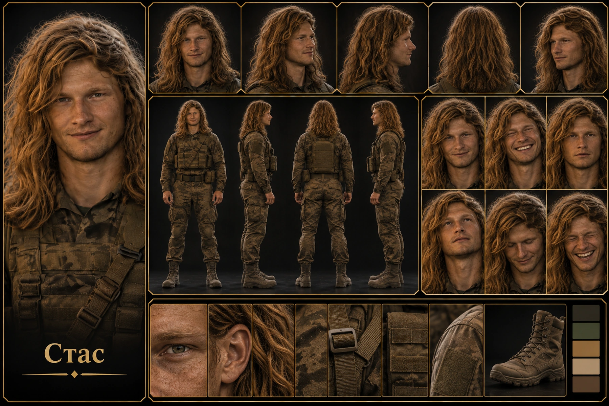

OVERVIEW
Stas
Stas is a reconnaissance fighter operating with Phoenix’s unit.

CANON AND STORY ROLE
Confirmed information
In “Day 19. Phoenix. Initiation”, Stas takes the lead as a scout while the unit moves along a tree line. He moves silently, checks the terrain, slips into the undergrowth to reconnoitre, and returns with brief signals that the enemy is nearby. He also reports information about an enemy group detected by the drone operators. In this episode, he is portrayed as composed, observant and capable in the field.